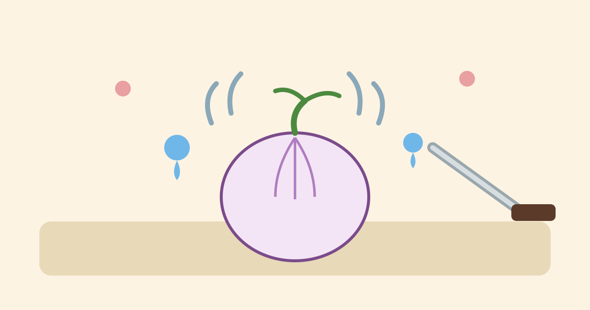

Why Do Onions Make You Cry?

You start out fine. The onion is on the board, the knife is in your hand, and dinner is ten minutes away. Then, halfway through the second slice, your eyes start to sting. You blink and tell yourself you are being dramatic. A few seconds later you are standing at the kitchen counter with tears running down your face, over a vegetable. It happens to almost everyone, and honestly, it never really stops feeling a bit ridiculous.
The strange part is that nothing has actually hurt you. No juice has splashed into your eyes, and you have not touched your face. The onion is doing its work from a distance, through the air. It is not trying to make you cry. It just has a defence system, and chopping sets it off. Once you see how it works, the tears make sense.
What Is Sitting Inside an Onion, Waiting
An onion is mostly water, sugar, and fibre, packed into thin layers. Hidden in that ordinary mix are compounds that contain sulphur, the same element that gives eggs and hot springs their distinctive smell. While the onion is whole, those compounds are kept apart from each other in different parts of the onion's cells, a bit like ingredients stored in separate cupboards. Nothing much happens. The onion just sits there, quiet and harmless.
Cutting changes everything. A knife does not just divide an onion into neat rings. It breaks open thousands of cells at once, and the separated ingredients suddenly meet. Enzymes, the tiny helpers that speed up chemical reactions, get to work on the sulphur compounds, and a chain reaction starts. Within seconds, the cut surface is producing a new chemical that was not really there before. That chemical is the whole problem.
The Gas That Finds Your Eyes
The chemical is called a lachrymatory factor. Lachrymatory is just a fancy word for tear-making, and its proper name is syn-propanethial-S-oxide. Forget the name. What matters is that it is a gas, light enough to float up from the board and drift the short distance to your face.
Your eyes are very good at noticing intruders. The surface of the eye is full of sensitive nerve endings, and when this gas touches them, they send an alarm signal. Your brain reads that signal the only way it knows how: make tears, and make them now. Tears are the eye's way of washing something away, so your tear glands flood the surface, you blink hard, and the tears spill over. You are not sad. Your eyes are just doing their job, a little too enthusiastically.
That is also why the tears often start a few seconds after the first cut, not instantly. The gas needs a moment to form and reach you, and it is strongest right above the board, where it is being made. Step back for a moment and there is simply less of it in the air around your face.
Why Some Onions Are Much Worse Than Others
Not every onion cries the same. Sweet onions, the mild ones that taste almost gentle raw, usually cause far fewer tears. They contain less of the sulphur compounds and more sugar and water, so there is less raw material for the tear gas. Sharp, pungent onions, often the yellow ones you buy for cooking, tend to be the worst offenders. Red onions sit in the middle.
Size and freshness play a part too. A big onion means more cut surface, more broken cells, and more gas. A firm, freshly cut onion releases its chemicals in a rush, while an older, softer one is often a little less fierce. One part deserves special mention: the root end, the flat base where the onion was attached to the plant. The tear-making compounds are most concentrated there, which is why cooks often leave the root end attached until the last cut, or cut it off and set it aside quickly.
Why a Sharp Knife Helps More Than You Would Think
Here is a detail that surprised me when I first heard it. A blunt knife makes you cry more than a sharp one. It sounds backwards, but for tears, the sharp knife wins every time.
The reason is cells again. A sharp knife slices cleanly, breaking only the cells directly in its path. A blunt knife crushes and tears as it goes, bursting far more cells on either side of the cut. More broken cells means more chemicals meeting, more gas, and more tears. So if your eyes always water, check the knife before blaming the onion. Standing in kitchen with a blunt knife is basically asking for tears. A quick sharpening will not make chopping tear-free, but it genuinely takes the edge off.
Tricks That Help, and Tricks That Mostly Do Not
Chilling the onion in the fridge for about half an hour before you cut it is one trick that actually helps. Cold slows the enzymes down, so the gas forms more slowly. It will not stop the tears completely, but it buys you time, and for one onion that is often enough. Cutting near a running fan, or next to an open window, helps for a similar reason: the air carries the gas away from your face instead of letting it rise straight up.
Swimming goggles, or any glasses that seal reasonably well around the eyes, help the most of all, because they simply keep the gas out. They look silly. Nobody cares when dinner is on the line. Rinsing the cut onion can wash some chemicals away, though it leaves the onion wet and slippery.
Then there are the tricks that sound clever but do very little. Bread in your mouth, chewing gum, or breathing through your mouth does not help, because the gas travels through the air. Holding your breath works for ten seconds, then you must breathe again. A bowl of water next to the board is mostly decoration. It might catch a tiny amount of gas, but nowhere near enough to matter.
Common Misconceptions About Onion Tears
One common idea is that tears mean the onion is strong or fresh in some special way. Not quite. Tears mostly mean the onion has plenty of those sulphur compounds and you have broken a lot of cells. A mild sweet onion can be perfectly fresh and barely make you blink.
Another is that rubbing your eyes will help. It will not. It usually makes the stinging worse, because your hands may carry a little of the onion's juices. If your eyes are watering, step away, blink a few times, and let the tears do their work. For most people the stinging fades within a minute or two.
Frequently Asked Questions
Does putting the onion in the freezer work better than the fridge?
A short chill in the freezer, ten minutes or so, can work, but it is easy to overdo. A partly frozen onion is hard to cut cleanly. The fridge, for half an hour, is the safer version of the same idea.
Why do I cry more than the person next to me?
People vary. Some eyes are simply more sensitive, some people stand closer to the board, and some chop faster, releasing more gas at once. Mostly, it comes down to the onion, the knife, and how close your face is to the board.
Can you buy onions that do not make you cry?
There are milder varieties, and sweet onions are the easiest to find. Breeders have also developed onions with much lower levels of the tear-making compounds. They exist, but they are not in every shop, and they tend to cost more. For most everyday cooking, a sweet onion and a sharp knife are the practical answer.
Does cutting an onion under water stop the tears?
Mostly, yes, in the sense that the water traps the gas before it reaches the air. But it is awkward, the pieces float about, and the board gets soaked. A fan and a chilled onion give you most of the benefit with far less mess.
Conclusion
So the tears are not a mystery, and they are not a sign that you are doing something wrong. You break the onion's cells, its separated chemicals meet, a light gas rises, and your eyes wash it away with tears. The knife, the chill, the fan and the goggles just make less gas, or keep it from your face.
Next time it happens, you will still probably cry a little. That is fine. At least now you will know exactly why, and which trick to reach for first. For me, it is the sharp knife and the fridge. The goggles stay in the drawer, for now.